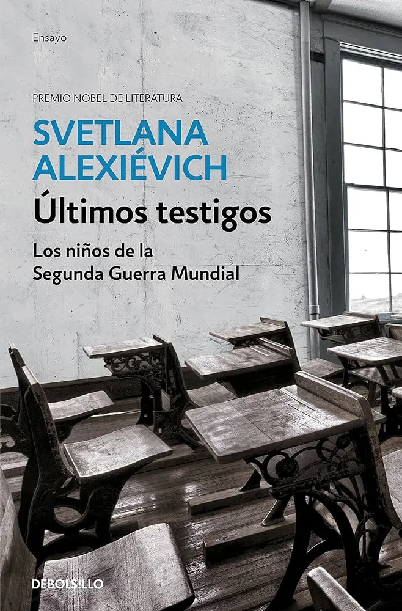

📚 Últimos testigos de Svetlana Alexievich
No te voy a engañar. Me ha costado mucho leer este libro. No por su formato ni por su narrativa, sino por su crudeza. Normalmente acostumbro a leer antes de dormir, cosa que me ayuda a conciliar el sueño y despejarme de todo el ajetreo del día. Con “Últimos testigos. Los niños de la segunda guerra mundial” he tenido que hacer una excepción y cambiar mis horarios. Me era imposible dormir tranquilamente después de leer uno solo de sus capítulos.
Anteriormente ya había leído “La guerra no tiene rostro de mujer” y “Voces de Chernóbil” de Svetlana Alexievich. Y aunque son libros realmente desoladores, no creo que llegasen al nivel de “Últimos testigos”. Probablemente sea por la perspectiva de estar leyendo relatos de alguien que ha vivido el infierno como un niño. O porque lo he leído en una época más sensible. No lo sé.
Este conjunto de experiencias es una lectura esencial para todo habitante de este planeta, especialmente para algunos mandatarios que pueden dormir tranquilos mientras inician guerras y aniquilan a cientos o miles de personas. “Últimos testigos” nos obliga a enfrentar las realidades más oscuras de la historia humana, y recordar que la guerra también colleva víctimas de personas inocentes, muchos de ellos niños.
Sin entrar mucho en detalle, algunas de las historias relatan el sufrimiento de una chica que nunca vuelve a ver a sus padres tras volver de su campamento de verano. Relatan cómo los nazis sacaban sangre a los chichos de los orfanatos. Cómo aquellos niños, sin nadie a quién acudir, huyeron y se refugiaron en casas ajenas.Cómo llegaron a comer sopa de corteza de sandía, sopa de cinturones, gorriones cazados mediante tirachinas...
Sin duda una novela ensayo que te deja marcado. Real, cruda y desde el punto de vista de unos niños a los que arrebataron la infancia.